Explore Salamanca
A Brief History
Salamanca rose around one of Europe's oldest universities, chartered in 1218, whose Plateresque façades and lecture halls made the city a centre of Spanish humanism. Roman bridges across the Tormes, the twelfth-century cathedral, and the Anaya Palace show earlier settlement on a major route between Madrid and Portugal. The city remained a seat of learning and political debate through the Habsburg monarchy, the Peninsular War, and the Franco years, when it briefly housed Nationalist headquarters.
Attractions Map
Top Sights & Activities
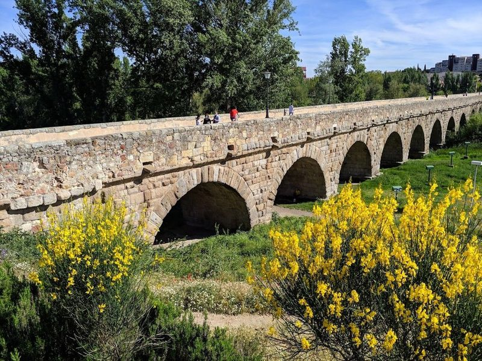
Puente Romano de Salamanca
Constructed in the 1st century AD, the Puente Mayor del Tormes is a centuries-old stone bridge providing picturesque river views. The high arch crosses the river and is made of 15 granite arches. The bridge was built to connect the inner city with the outside, divided by the Tormes River.
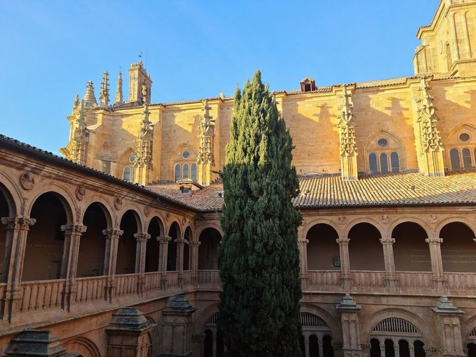
Convent of San Esteban
The Convento de San Esteban, a Dominican monastery located near the Puente Nuevo, boasts a splendid church with lavish Plateresque decoration. Built between 1524 and 1610, the church features a gilded high altar by Jose de Churriguera and impressive side altars. This prime example of plateresque style architecture showcases Baroque and Renaissance elements. The facade is particularly remarkable with intricate carvings depicting the Martyrdom of Saint Stephen.
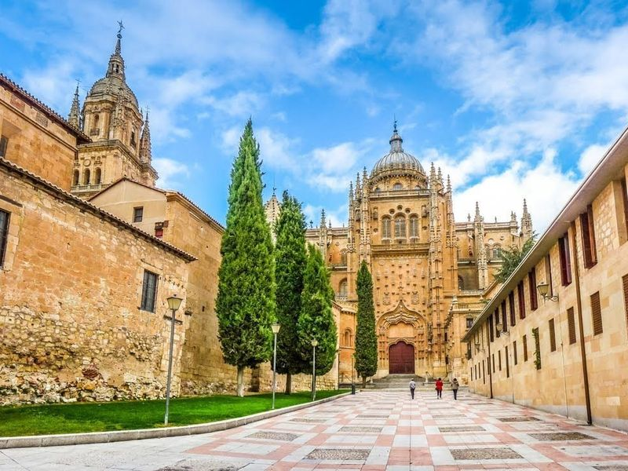
Salamanca Cathedral
Salamanca Cathedral is a grand Gothic and baroque edifice adorned with intricate carvings, including an unexpected astronaut added in the 1990s. The Old Cathedral and the New Cathedral stand side by side, making it initially challenging to distinguish between them. Visiting both cathedrals may be more appealing for religious purposes, while those seeking picturesque views and artwork can enjoy interior vistas from the Ieronimus tower.
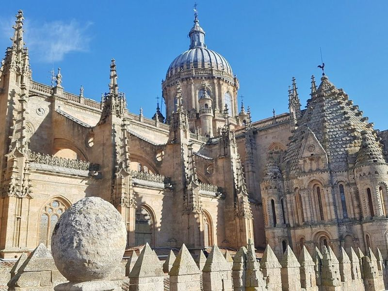
Ieronimus Tower (Old Cathedral)
The Ieronimus Tower, also known as the Old Cathedral, is a must-visit in Salamanca. It offers a unique opportunity to explore the medieval towers and enjoy panoramic views of the city. travellers can walk around exterior terraces, lookout points, and balustrades while admiring historic adornments such as gargoyles and pinnacles. The tower provides insights into architectural evolution from Romanesque to Gothic styles and allows access to hidden parts of the cathedral.
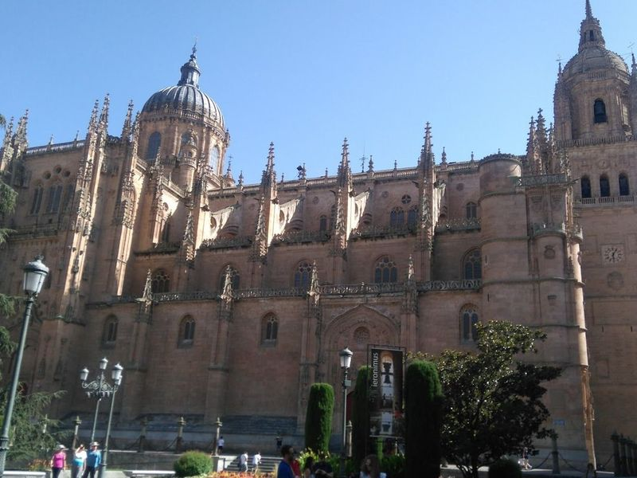
Anaya Palace
Anaya Palace, located on the University of Salamanca campus, has a rich history dating back to the 17th century. Originally founded as a university residency in the 15th century, it now houses the Faculty of Languages and stands out as one of the few neoclassical-style buildings in Salamanca. The palace was once home to Colegio Mayor de San Bartolome and is adjacent to the Iglesia of San Sebastian.
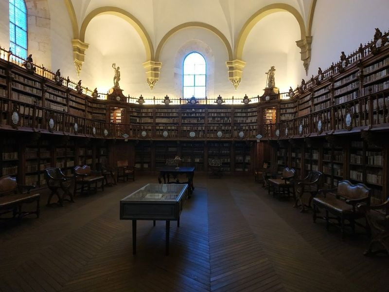
Frog of Salamanca
Frog Salamanca is a popular tourist attraction known for its richly carved facade, featuring intricate designs and a tiny frog sculpture. The frog holds symbolic significance, representing the fleeting nature of joy in life. travellers are challenged to locate the hidden frog on the building's front facade, adding an element of fun to the experience. This charming spot offers an opportunity to admire the beautiful architecture and discover the special detail that makes it unique.
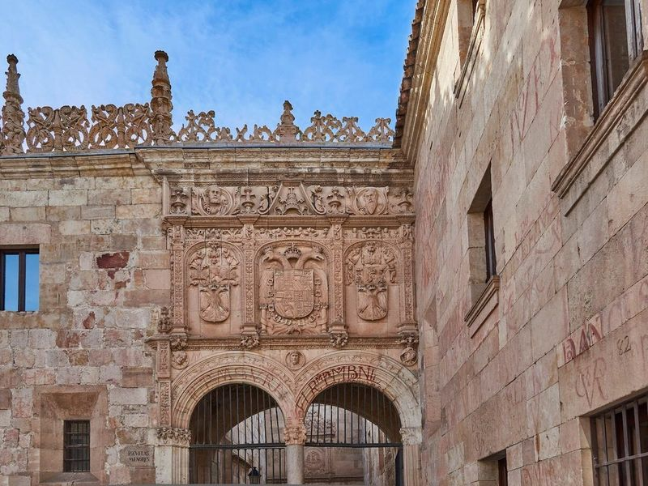
Escuelas Menores de la Universidad de Salamanca
Nestled in the heart of Salamanca's historic district, the Escuelas Menores de la Universidad de Salamanca is a example of 15th-century architecture. This serene building features a captivating Renaissance courtyard adorned with impressive arcades and intricate mural art. A highlight for travellers is its facade, which boasts numerous figures, including the elusive frog on a skull—a symbol believed to bring academic success to those who spot it.
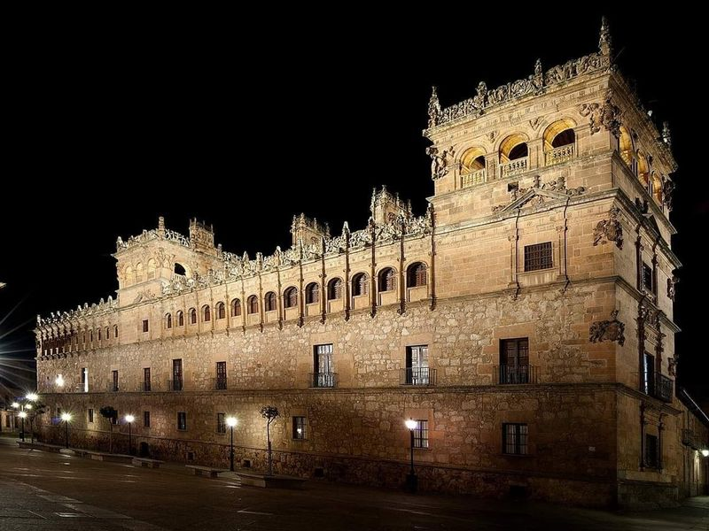
Monterrey's palace
The Palacio de Monterrey, a historic 16th-century building, is a prime example of Spanish Renaissance architecture. It has influenced various architectural styles and served as an inspiration for other notable buildings. Located near Plaza Mayor, it's part of a charming area in Salamanca that includes the Convent of Las Ursulas and the College of Archbishop Fonseca. The palace features beautiful Renaissance design with a no-photo policy inside until you reach the roof tower.
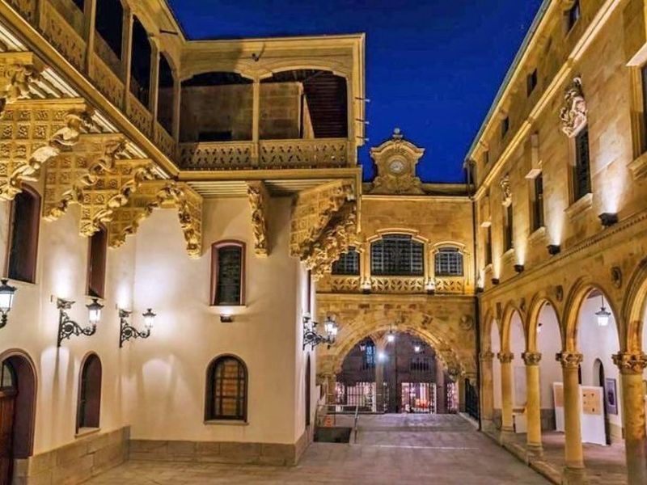
Palacio de la Salina
Palacio de la Salina is a historic palace in Salamanca, built in 1538 and known for its lavishly decorated Plateresque facade and courtyard with a loggia. It was once the headquarters of the salt tobacconist and later became the Provincial Council's headquarters, hosting temporary exhibitions. The palace stands out from others in Salamanca and has inspired legends due to its unique characteristics.
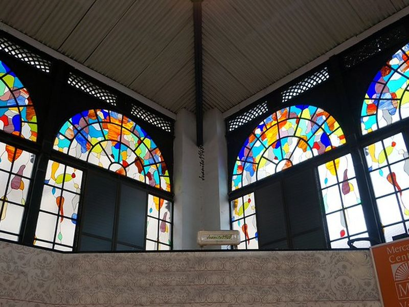
Salamanca Central Market
A lively market where experience local culture, sample fresh produce, meats, cheeses, and other regional specialties. The site is catalogued as a market. Salamanca Central Market is listed among principal sites for Salamanca within Spain. Municipal and regional heritage listings document its place in the historic centre and travellers routes through Salamanca.
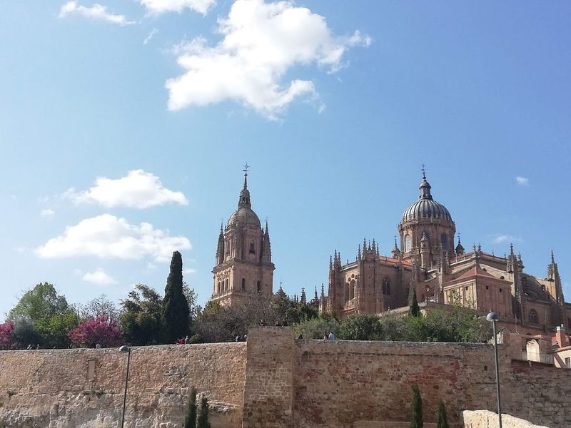
Huerto de Calixto y Melibea
Huerto de Calixto y Melibea is a charming garden located near the cathedrals in Salamanca, offering diverse plant species and views of the cathedral and the river. This botanical paradise, named after characters from 'La Celestina,' invites travellers to relax in its serene atmosphere while admiring statues dedicated to Fernando de Rojas' literary masterpiece. The garden's historical significance is further enhanced by its proximity to the remains of the Roman Walls.